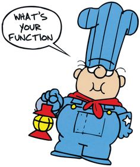
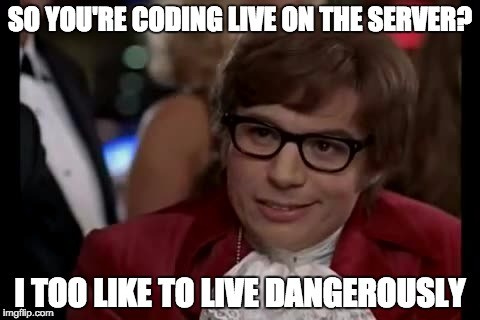
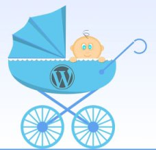

Advanced WordPress with PHP
Welcome!
- We're going to learn some cool WordPress Stuff
- Go ahead and visit the course webpage here. Download the files if you want to be ahead of the game.
- Otherwise just chill out and have some snacks.
Welcome!
Girl Develop It is here to provide affordable and accessible programs to learn software through mentorship and hands-on instruction.
Some "rules"
- We are here for you!
- Every question is important
- Help each other
- Have fun
Who am I and why should you listen to me?
I'm a full time Front End developer at Push 22 who has been working with WordPress for about 4 years.
I'm not a computer scientist. My background is actually in rhetoric, philosophy, and biology. I learned WordPress through trial and error (mostly error), insane deadlines, and lots of Googling.
What are we going to cover in this class?
- WordPress Functions
- Basic PHP syntax
- Coding Safety
- The WordPress Codex
- The loop
- Some handy plugins
What is PHP?
PHP stands for:
PHP:
Hypertext
Pre-processor
Coding nerds find things like this hilarious.PHP is just about everywhere
Trivia to impress your friends: Facebook is built in PHP.Most importantly (to us), PHP is what makes WordPress work.
Think of WordPress like an automotive factory.
- Linux and Apache are the foundation.
- The MySQL database is where the raw materials are kept.
- CSS is where the paint and styling is applied.
- PHP is the robots and workers who put all of the parts together before they go to be painted.
Why do we use PHP and not just straight HTML?
While PHP can be a bit of a pain at first, it's also a huge time saver.
<ul>
<li><a href="./"> Home </a></li>
<li><a href="./about"> About </a></li>
<li><a href="./cat-pics"> Cat Pictures </a></li>
<li><a href="./contact"> Contact </a></li>
</ul>
Here's the same thing in WordPress
<?php wp_nav_menu(); ?>
Isn't it pretty? All squeaky clean and nice?
This way if you update your menu in one spot, your changes appear everywhere at once.
Getting ready for WordPress
WordPress/PHP require more special software to make them "go" than plain HTML does. Usually this software is run on a dedicated web server, but today we're going to run it on our computers directly.
Today we're going to use Desktop Server!
If you haven't already:
- Visit https://serverpress.com/.
- Scroll down about halfway and click the “Free - add to cart button".
- Fill in your information on the form (they do require an email address).
- Agree to the terms and click the purchase button (it’ll be $0.00).
- You’ll redirect to a new page with a list of download links. Choose the one that matches your computer’s operating system.
- Download and run the installer program.
Let's get this thing fired up!
- Go ahead and open Desktop Server. It might ask you for your computer's password.
- Now you want to start Apache and MySQL services.
- Now start web services. And finally, create a new development website. When it asks where your site root should go, choose a directory that's easy to navigate to. (Desktop is usually good.)
- Click the WordPress install link when it appears.
- Fill out the WordPress installation form (super easy).
Let's install the WordPress theme that we'll be using in this course.
You'll find a zip file in your course files!
Let's start with a simple photo blog site.
In your course files, you'll see a folder called basic-html. Open the index.html you find there.
We're going to duplicate a site like this in WordPress.
Exercise!
Let's use our first WordPress function!
Today we're going to start with one of the most common: wp_nav_menu.
Let's start by looking at that function on the WordPress codex.
wp-nav-menuFirst, let's make our menu in the WordPress back-end.
Add three new pages to your WordPress site.
Now add a nav menu.
Add the wp_nav_menu function
Open header.php.
<? php wp_nav_menu (); ?>
Let's break down that function we just used:
<? php wp_nav_menu (); ?>
So we're opening PHP, writing in our function, and then closing PHP.
What's up with the parantheses?
They're where we put in our arguments in the form of an array.
Let's go back to the Codex and look at some arguments that are available for this function.
How do arguments work?
Some arguments behave like filters: you use them to narrow data down to a specific category or type.
Other arguments are called booleans. This is computer science nerd for "true or false".
Let's go back to our wp_nav_menu function and add an argument.
WordPress supports having multiple menus on the site. Let's use an argument to specify a menu called "main".
Exercise: using arguments with functions
Let's add another menu, this time only include two of your pages. Be sure to give it a distinctive name.
Modifying our existing function
Add a filter that specifies which menu to load.
Let's explain what just happened...
Time to understand PHP functions!
Navigate to your WordPress directory and create a new file called test.php.
Paste in this code:
<html>
<p>I'm just some plain old HTML </p>
</html>
Cool thing about PHP: you can just put regular old HTML in your files and everything is cool. However, you cannot put PHP in your HTML files!
Now, go ahead and view your page.
In your browser, go to your-site-name-here.dev/test.php.
You should see your HTML content.
Congratulations! You've made your first PHP page!
That wasn't so bad, now was it?
PHP's syntax is similar to HTML
<?php echo "I'm some PHP" ;?>
<p> I'm some HTML! </p>
Let's dissect that PHP a little bit...
What do you notice about this short piece of code?
<?php echo "I'm some PHP" ;?>
- There's an opening tag.
- There's some kind of command, in this case "echo".
- There's a semi-colon.
- There's a closing tag.
You can do a lot more with PHP than just replacing HTML content.
PHP can also be used for functions and arrays.
Let's talk functions!
A function is a single line of code that is used to replace a bunch of instructions.
Exercise! Let's write our first function
<?php function writeMessage(){
echo "Hello World!";
}
writeMessage(); ?>
Functions are the backbone of WordPress.
The other thing we need to understand is arrays.
What's an array?
An array is basically a list or a scratchpad for a program. They're used for storing things for a little while.
Exercise: Our first array
<?php
$cats = array("tabby", "calico", "persian");
echo "I like " . $cats[0] . ", " . $cats[1] . " and " . $cats[2] . ".";
?>
Let's talk about errors...
One of the biggest gripes about PHP is how it handles errors. Or rather, how it doesn't handle errors.

What to do when PHP gives you an error
Public Service Announcement: Code Safely!
Don't be a cowboy (or cowgirl) coder!
This is someone who is working on a live website without a safety net. This is really bad!
The WordPress editor should be banned.
Have a dev site.
A subdomain is probably the most common way of doing this.
If you don't want to worry about a lot of server setup stuff, get a managed WordPress host like wp-engine.
So what's the big deal?
One missing semi-colon can take down an entire website!
Always work from a dev copy and always make sure that your dev site is a recent copy of your live site.
Now hear my short tale of woe from last summer...
Back to WordPress
Now we're going to start working with building new pages and themes in WordPress.
WordPress is huge.
Remember that wp_nav_function we used earlier?
There's plenty more where that came from...

Let's go back to the codex!
The codex is like a WordPress developer's handbook, rosetta stone, and bible all in one.
- Handbook: It explains the basics of using a WordPress site.
- Rosetta Stone: it helps you make sense of WordPress's developer features like functions.
- Bible: It also makes ethical arguments about how to code your pages, treat your users, and be a good developer in general.
The WordPress Loop
WordPress has its roots as a blogging platform. The Loop is how WordPress displays posts and other dynamic content.
Let me be the first to say: the WordPress loop can be intimidating.
But don't let it get to you!
Before we start getting into the loop, let's begin with an analogy:
Next time you're in your shower, look at your shampoo bottle and read the instructions. Some of them say "lather, rinse, repeat".
What would happen if someone took that literally?
The Loop is the "lather, rinse, repeat" of WordPress theme building.
WordPress will just keep doing this series of actions until it runs out of shampoo... er, I mean posts to do it to.
Fun side note: you can create an infinite loop, which will give you the "white screen of death". Remember what I said about WordPress safety?Let's start with just a basic loop and break down what's going on:
<?php if ( have_posts() ) : while ( have_posts() ) : the_post(); ?>
<div class="entry">
<?php the_content(); ?>
</div>
<?php endwhile; else : ?>
<p><?php _e( 'Sorry, no posts matched your criteria.' ); ?></p>
<?php endif; ?>
I know right?!?
Let's break this down one piece at a time...
<?php if ( have_posts() ) : while ( have_posts() ) : the_post(); ?>
This starts the Loop, it's saying "if you have some posts, go get them ready, we're going to do something with them
Wrapping up the loop...
<?php endwhile; else : ?>
<p><?php _e( 'Sorry, no posts matched your criteria.' ); ?></p>
<?php endif; ?>
endwhiletells WordPress that the loop is about to end.elsetells WordPress what to do if there's no posts.endiftells WordPress that the loop is totally done now.
Exercise: let's add a loop
What can we do with the Loop besides display posts?
Well, by filtering posts we can do all sorts of things!
The Loop can be used to display a picture gallery, a news section, or any number of things.
Filtering the Loop
Exercise: filtering posts in the loop
- Add 2 post categories.
- Add 4 more posts, two in each category.
Now for the filter...
- Add the category argument to the loop.
- Refresh your page.
- Pat yourself on the back.
Theming
Where it all comes together...
A theme is just a collection of a few PHP files and a CSS file.
Child themes
(and when to use them)
WordPress has a hierarchy
http://wphierarchy.com/The long way is also the smartest way...
Start with an HTML file and convert it!
Handy plugins and tools
Use plugins carefully when developing with WordPress!
Advanced Custom Fields (ACF)
The easiest way to add custom fieldsEverybody uses this thing... Here's why!
Let's say we want to add a description to our photos
We could use the WordPress content section, but the formatting is wonky.
WordPress wraps everything in a <p> tag...ACF to the rescue!
It lets you make areas that do one thing really well for your WordPress theme.
The truth is, you don't need ACF to do this.
You can do all of this in the WordPress theme files like function.php, but it's not worth the effort.
Metabox.io
For when you need to add lots of fields at once The learning curve on this one is quite a bit steeper, you have to edit yourfunctions.php file.
Wrapping up
"Never memorize something that you can look up."
Albert Einstein
How strong is your Google-Fu?
You're almost never the first person to have this problem (no matter what the problem is).WordPress has a pile of support like the Codex and its forums.
Don't bother trying to memorize all of these functions, instead focus on understanding the syntax and "the WordPress way".
Useful links and other gizmos
- wphierarchy.com
- generatewp.com (some premium sections)
- StackOverflow
Upcoming GDI Events!
- 04/23: Intro to WordPress (Tell your friends!)
- 05/14 & 05/15: Intro to Git & GitHub
- 05/21: Intro to Object-Oriented Programming
Make sure to like us on Facebook, follow us on Twitter, and watch our Meetup group for more great events!
Questions?
We're here to help!

Twitter: @gdiDet